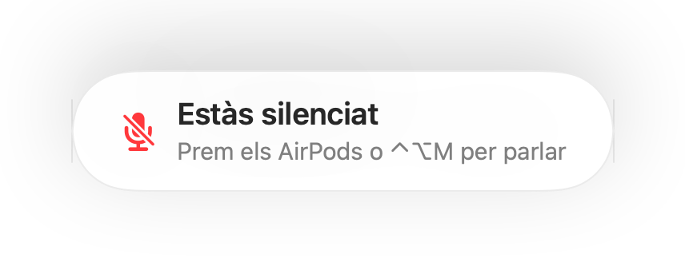
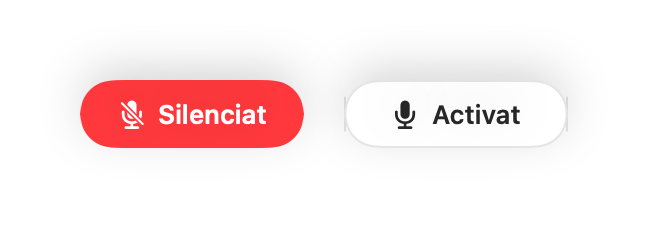
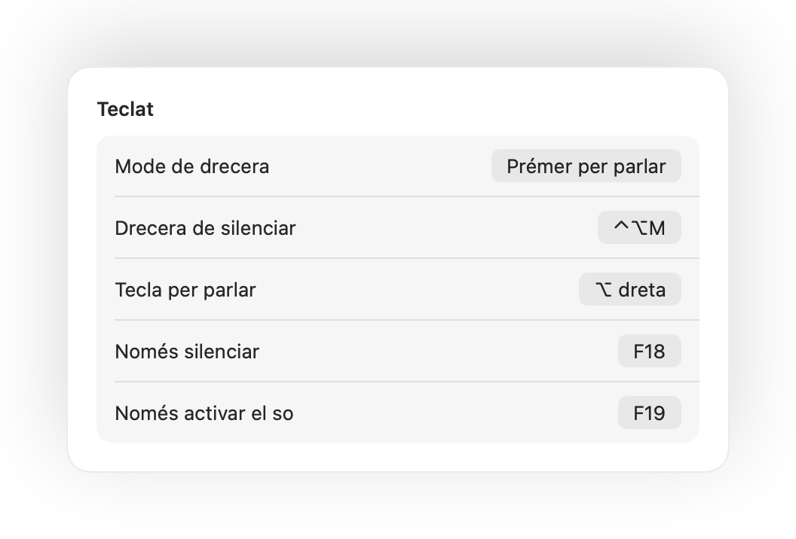
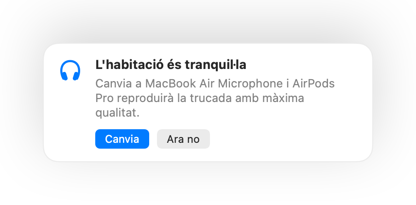
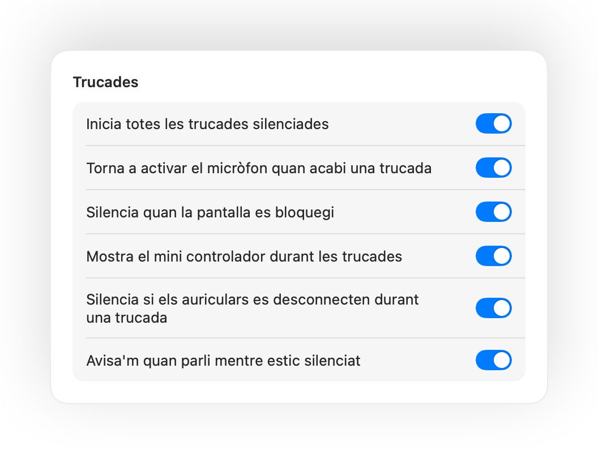

Prem els AirPods per silenciar
Durant qualsevol trucada, prem la vareta una vegada per silenciar i una altra per activar el so. Funciona fins i tot a Chrome, on Google Meet i altres videotrucades web ignoren la premuda dels AirPods.
Muffle per a Mac
Prem els AirPods o una drecera de teclat. Muffle desactiva el micròfon mateix perquè Google Meet, Zoom, Teams, Slack i les altres apps només rebin silenci.
Gratis durant 3 dies. Després un pagament únic, sense subscripció. Per a macOS 14 Sonoma i posterior.
Fes clic al botó, prem els AirPods o utilitza una drecera. Muffle desactiva el mateix micròfon, de manera que totes les apps senten silenci.
Silencia, tria el micròfon, bloqueja'n el nivell i activa o desactiva funcions, directament des de la barra de menús.

La majoria de botons per silenciar només silencien una app. Muffle desactiva el mateix micròfon, de manera que totes les apps del Mac senten silenci.
Durant qualsevol trucada, prem la vareta una vegada per silenciar i una altra per activar el so. Funciona fins i tot a Chrome, on Google Meet i altres videotrucades web ignoren la premuda dels AirPods.
Si comences a parlar mentre estàs silenciat, Muffle t'avisa abans que expliquis tota la teva idea a ningú.

Control-Opció-M et silencia a tot arreu, fins i tot quan la trucada és en una pestanya en segon pla. Mantén-la premuda per parlar mentre estàs silenciat i deixa-la anar per tornar a silenciar.
Un botó flotant et mostra l'estat del micròfon durant les trucades. Fes-hi clic per silenciar o activar el so.

Tria com funciona la drecera: toca per canviar, mantén premut per parlar o mantén premut per silenciar un cop de tos. Afegeix tecles separades per silenciar i activar el so, o mantén premuda una sola tecla com ara ⌥ dreta o un botó addicional del ratolí.

Has activat el so per dir una sola cosa? Si després et quedes en silenci durant el temps que triïs, Muffle et torna a silenciar. Només compta la teva veu, no teclejar ni el soroll de fons.
Amb els AirPods en una habitació tranquil·la, Muffle suggereix el micròfon del Mac perquè els AirPods reprodueixin la trucada amb màxima qualitat. Quan hi ha soroll, suggereix el micròfon dels AirPods.

Chrome, Zoom i Teams canvien el nivell del micròfon pel seu compte. Bloqueja'l i Muffle el tornarà a posar al seu lloc.
Inicia totes les trucades silenciades, torna a activar el micròfon quan acabi una trucada i silencia quan la pantalla es bloquegi.

Si els auriculars es desconnecten a mitja trucada, Muffle silencia abans que el Mac canviï al micròfon integrat i se senti tota l'habitació.
Silencia des de l'app Dreceres, Siri, un Stream Deck, Raycast o un botó al Centre de control.
Una resplendor verda o vermella al voltant de la pantalla, una icona de color a la barra de menús, un botó flotant i un so que pots desactivar per a cada micròfon. Activa els que més t'agradin.
Muffle mai enregistra, emmagatzema ni envia àudio. Només activa o desactiva el micròfon i en mesura el volum. Sense comptes, sense analítiques i sense seguiment.
Instal·la Muffle des de la Mac App Store i permet l'accés al micròfon.
Uneix-te a una trucada des de qualsevol app, com de costum.
Prem els AirPods, prem Control-Opció-M o fes clic a la icona de la barra de menús per silenciar.
Sí. Chrome no trasllada la premuda de silenciar dels AirPods a les trucades web, de manera que Muffle la rep i silencia el micròfon mateix. El mateix passa amb qualsevol trucada en una pestanya del navegador.
És possible que l'app de la trucada continuï mostrant el micròfon com a activat, perquè Muffle apaga el micròfon físic i no pas el botó de l'aplicació. Tothom sentirà silenci igualment. La icona de Muffle a la barra de menús es posa vermella mentre estàs silenciat.
AirPods Pro, AirPods 3 i posteriors, i AirPods Max, a més dels models Beats compatibles amb els controls de trucada. La drecera de teclat i la barra de menús funcionen amb qualsevol micròfon.
Sí. Muffle funciona amb totes les apps del teu Mac que utilitzen el micròfon, tant aplicacions d'escriptori com trucades al navegador web.
No. Prova totes les funcions gratis durant 3 dies i després desbloqueja Muffle amb una sola compra.
macOS només envia les premudes dels AirPods a les apps que poden utilitzar el micròfon, de manera que Muffle manté oberta una connexió silenciosa durant les trucades. No es grava res.
Muffle torna a activar el micròfon quan surts de l'app, així que mai et quedaràs sense veu.
macOS 14 Sonoma i posterior. El botó del Centre de control requereix macOS 26 o posterior.
Sí. Tria «Prémer per parlar» a la configuració i mantén premuda la drecera per parlar. També pots mantenir premuda una sola tecla com ara ⌥ dreta o fn, o un botó addicional del ratolí.
Quan una trucada utilitza el micròfon dels AirPods, els AirPods canvien al mode de trucada, que reprodueix el so amb menys qualitat. En una habitació tranquil·la, Muffle suggereix utilitzar el micròfon del Mac perquè els AirPods continuïn reproduint amb màxima qualitat.
No. Muffle reconeix la parla mitjançant l'anàlisi de so al dispositiu d'Apple, de manera que només compta quan parles. Teclejar, els clics i el soroll de fons no compten, i no es grava res.
Respostes curtes i pràctiques per silenciar el micròfon al Mac, a qualsevol app.
Muffle és gratuït per provar durant 3 dies.